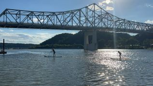

About Us
Long Way Up Endeavors (LWU) is here to partner with you on your journey as an individual, group, or business to grow in personal development and team building.
Leaders
Evan and Brooke Young have worked to promote healthy lifestyles, balance, and mindfulness into their own lives along with the communities around them. With a foundation in leadership development, we are excited to bring our experience and knowledge to help you find a balance, in your personal or profesisonal life. The world is filled with influence, good and bad. We're here to help you eliminate distractions and work through your journey. With over 10 years of experience, LWU is for YOU!
LWU 4 YOU
Have you ever experienced adversity? Conflict? Mental Health struggles? Grief? What type of coping skills have you used? Do you struggle with building or mending relationships? How many healthy activities to you CHOOSE to do each week? Long Way Up Endeavors is here to help you find your "Way Up." Find YOUR LWU